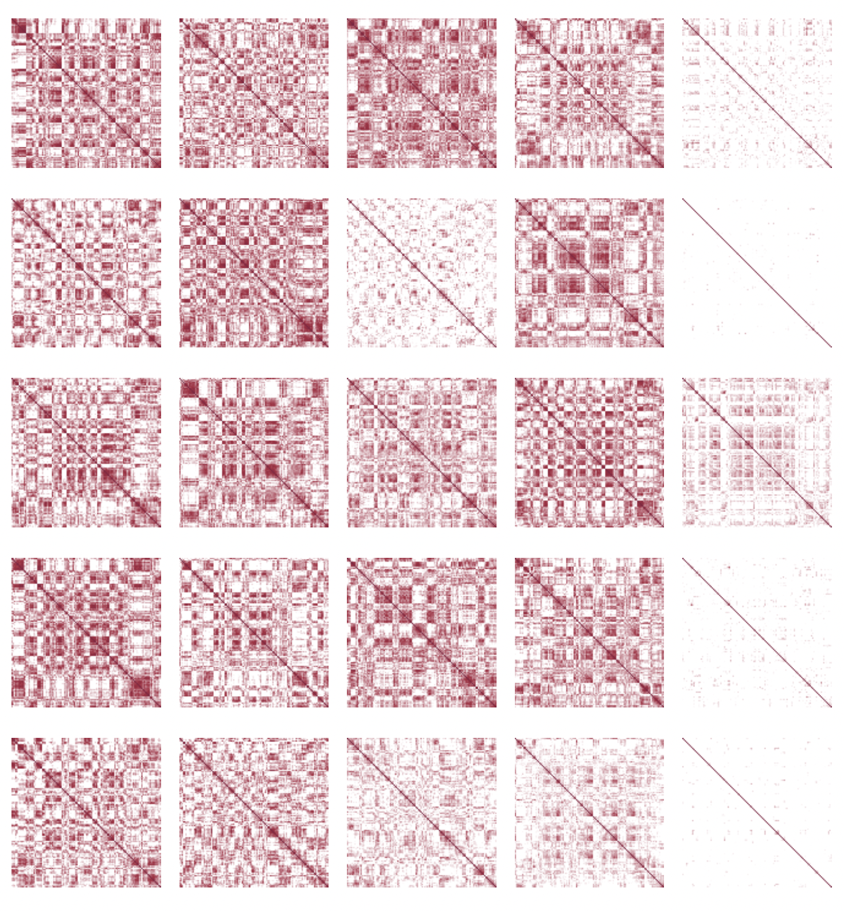
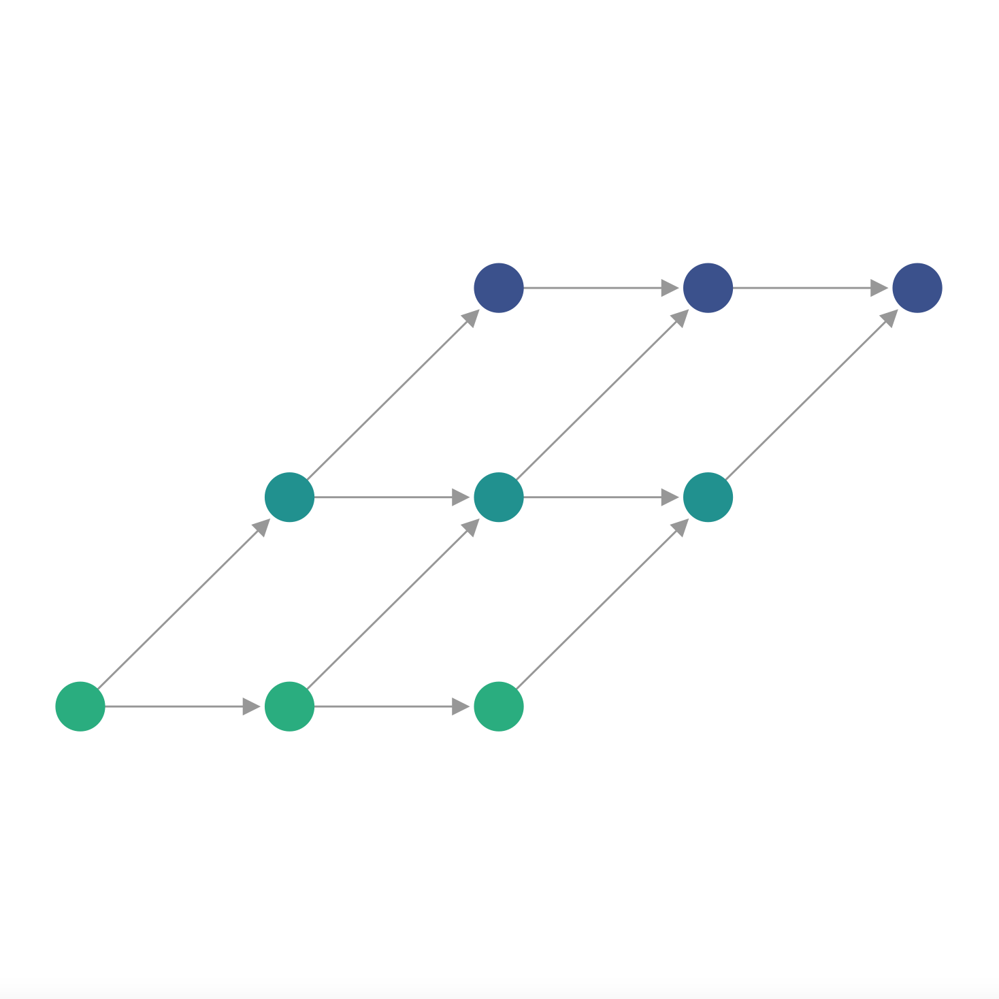
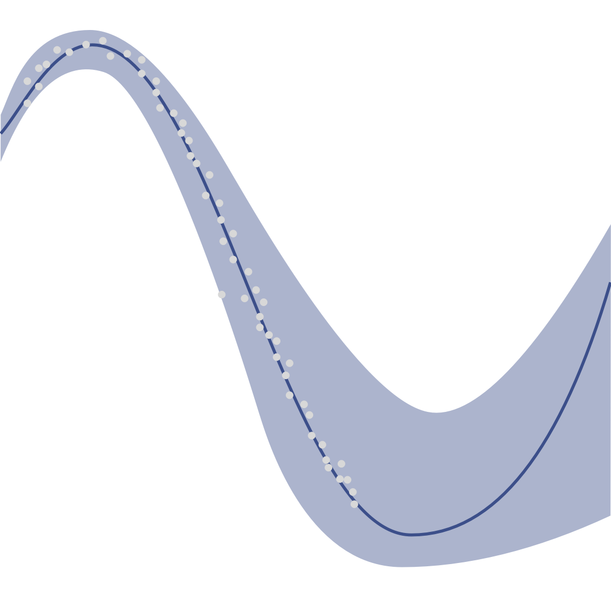
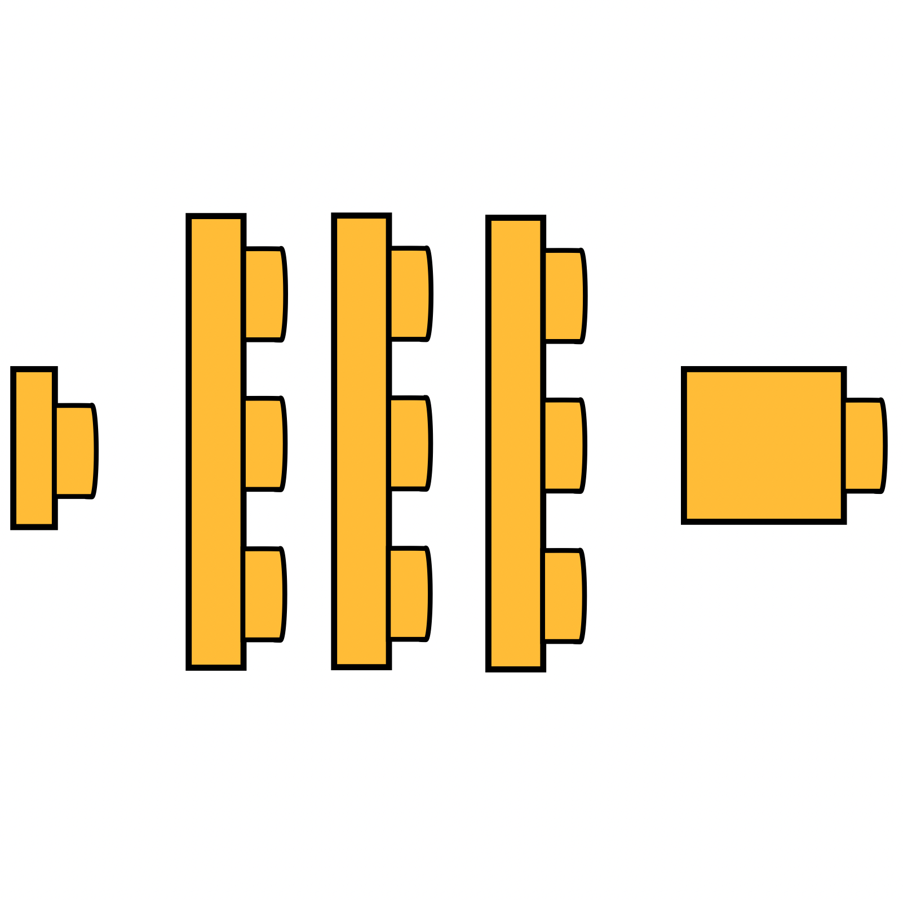
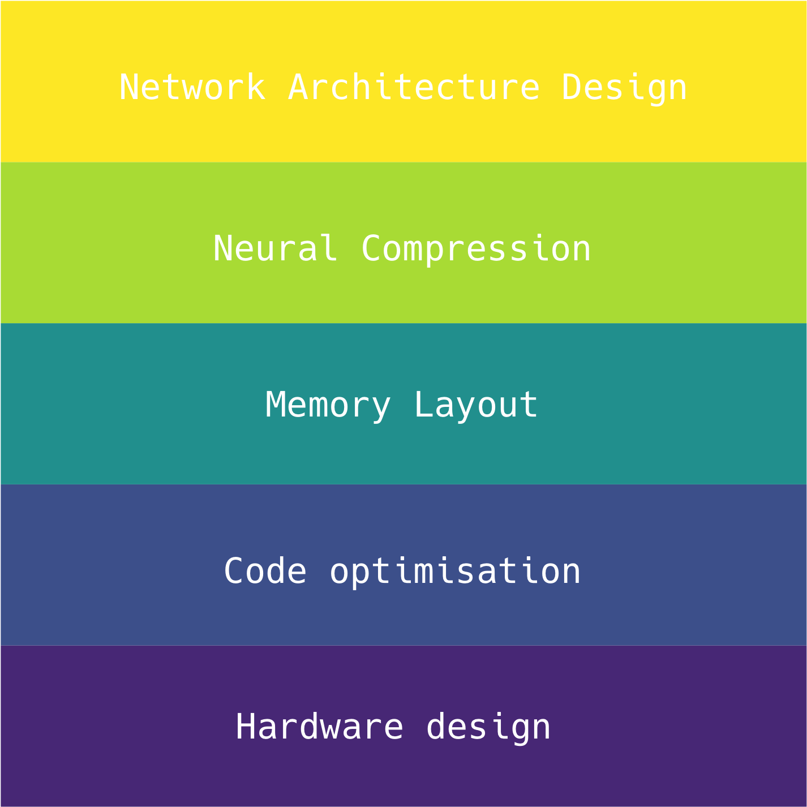
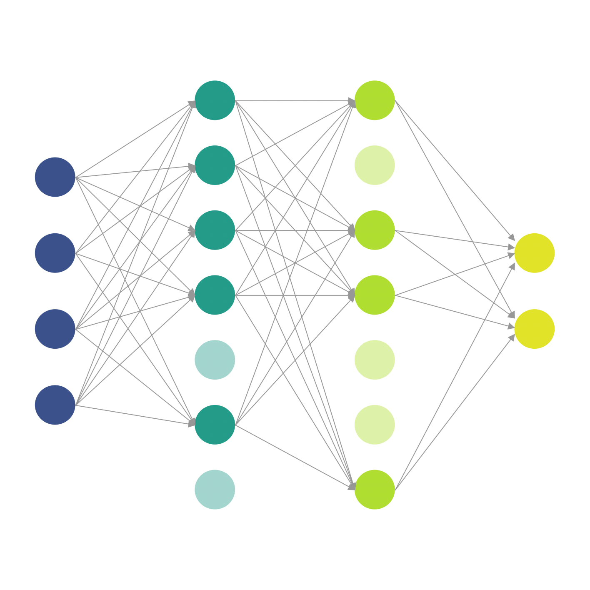

I am a third year PhD student at the University of Edinburgh, supervised by Professor Michael O’Boyle and Lecturer (Asst. Prof.) Elliot J. Crowley. I'm in the fourth year of the Pervasive Parallelism CDT programme.
My research interests include (but are not limited to!):
- Architecture rewriting in neural networks
- Optimising compilers
- Program transformations
In my spare time I enjoy baking bread, climbing rocks, and using Oxford commas.
Conference papers
18th July, 2021
ICML
Neural Architecture Search Without Training
Joseph Mellor, Jack Turner, Amos Storkey, Elliot J. Crowley.
A low-cost measure for scoring networks at initialisation
which allows us to perform architecture search in a matter
of seconds instead of hours or days.

19th Apr, 2021
ASPLOS

Neural Architecture Search as Program Transformation Exploration
Jack Turner, Elliot J. Crowley, Michael O'Boyle.
A compiler-oriented approach to neural architecture search
which allows us to generate new types of convolution.

6th Dec, 2020
NeurIPS
Bayesian Meta-Learning for the Few-Shot Setting via Deep Kernels
Massimiliano Patacchiola, Jack Turner, Elliot J. Crowley, Michael O'Boyle, Amos
Storkey.
A Bayesian treatment for the meta-learning inner loop through the use of Gaussian Processes
and neural networks.

26th Apr, 2020
ICLR
BlockSwap: Fisher-guided Block Substitution for Network Compression
Jack Turner, Elliot J. Crowley, Amos Storkey, Michael O'Boyle, Gavin Gray.
One-shot compression of neural networks by swapping out residual
blocks for cheaper alternatives, guided by Fisher Information at
initialisation.

30th Feb, 2018
IISWC
Characterising Across-Stack Optimisations for Deep Neural Networks
Jack Turner, José Cano, Valentin Radu, Elliot J. Crowley, Amos Storkey, Michael
O'Boyle.
A study on the interaction of optimisations applied at different levels
of the compilation stack for neural networks - from neural architectural
decisions through to hardware design.

Neural Architecture Search Without Training
Joseph Mellor, Jack Turner, Amos Storkey, Elliot J. Crowley.
A low-cost measure for scoring networks at initialisation which allows us to perform architecture search in a matter of seconds instead of hours or days.
Neural Architecture Search as Program Transformation Exploration
Jack Turner, Elliot J. Crowley, Michael O'Boyle.
A compiler-oriented approach to neural architecture search which allows us to generate new types of convolution.
Bayesian Meta-Learning for the Few-Shot Setting via Deep Kernels
Massimiliano Patacchiola, Jack Turner, Elliot J. Crowley, Michael O'Boyle, Amos Storkey.
A Bayesian treatment for the meta-learning inner loop through the use of Gaussian Processes and neural networks.
BlockSwap: Fisher-guided Block Substitution for Network Compression
Jack Turner, Elliot J. Crowley, Amos Storkey, Michael O'Boyle, Gavin Gray.
One-shot compression of neural networks by swapping out residual blocks for cheaper alternatives, guided by Fisher Information at initialisation.
Characterising Across-Stack Optimisations for Deep Neural Networks
Jack Turner, José Cano, Valentin Radu, Elliot J. Crowley, Amos Storkey, Michael O'Boyle.
A study on the interaction of optimisations applied at different levels of the compilation stack for neural networks - from neural architectural decisions through to hardware design.
Workshops/Preprints
7th June, 2019
NeurIPS
CDNNRIA
Pruning neural networks: is it time to nip it in the bud?
Elliot J. Crowley, Jack Turner, Michael O'Boyle, Amos Storkey.
An investigation into the efficacy of structured pruning
for compressing neural networks. We show that simple
downscaling schemes can be used to produce more performant
networks than their pruned equivalents.

Pruning neural networks: is it time to nip it in the bud?
Elliot J. Crowley, Jack Turner, Michael O'Boyle, Amos Storkey.
An investigation into the efficacy of structured pruning for compressing neural networks. We show that simple downscaling schemes can be used to produce more performant networks than their pruned equivalents.